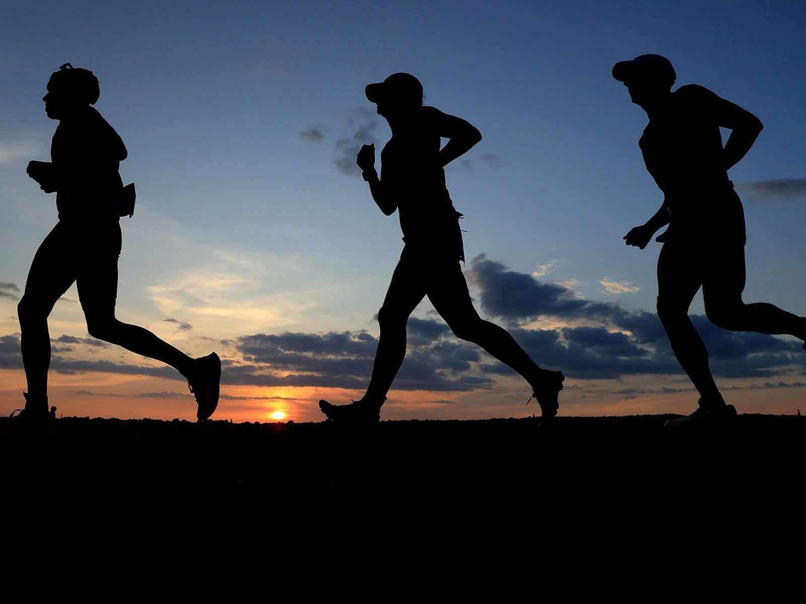

Consistency is key to realizing the many benefits of exercise.Once a week will not help you meet your goals.One of the main benefits of consistent exercise is maintaining a healthy weight. Put simply, energy out must equal to or greater than energy in. That energy balance is vital.A commitment to a regular workout regimen will increase your fitness level, improve your health and generate a greater sense of mental well being.

Consistency is the critical driver for success. Being consistent means dedicating yourself to your goals and staying focused on the things and activities to achieve your goals. Consistency requires a long-term commitment from you and involves sustained effort in doing actions repeatedly until you achieve your goals.It's hard to be consistent because we tend to focus on the outcome more than the process. Put another way, we're more drawn to the positive feelings of outcomes rather than the struggle of the journey. Most of us quit during the struggle before we can experience the rewards of staying the course.
You don’t have to have a gym membership to engage in an effective workout. You can work out during your lunch break—walking, jogging, bicycling, walking the stairs, and even weight training. One of the most believed deceptions in society is that you need machines to get a good workout. But think about the human body and the different exercises you can do without touching a man made object. Crunches, squats, planks, jumping jacks, and so many more exercises are readily available.
Consistent exercise requires thought and planning. If you want to stay faithful, you can schedule your exercise time during your favorite television show. Walk in place, do squats up and down the hallway, lift weights, and stay active.
When you exercise regularly, you experience many benefits. Improving your circulation allows for fatty acids to move through the blood and into the muscle easier, which, in effect, means fat fuels your body. In addition, the number of mitochondria increases, providing your body with more energy.
There are so many fitness routines available online and through programs, but because old habits die hard, it’s difficult to branch out. Try something new and enjoy consistent exercising.
Heart Disease Not getting enough physical activity can lead to heart disease—even for people who have no other risk factors. It can also increase the likelihood of developing other heart disease risk factors, including obesity, high blood pressure, high blood cholesterol, and type 2 diabetes.
Type 2 DiabetesNot getting enough physical activity can raise a person’s risk of developing type 2 diabetes. Physical activity helps control blood sugar (glucose), weight, and blood pressure and helps raise “good” cholesterol and lower “bad” cholesterol. Adequate physical activity can also help reduce the risk of heart disease and nerve damage, which are often problems for people with diabetes.

CancerGetting the recommended amount of physical activity can lower the risk of many cancers, including cancers of the bladder, breast, colon, uterus, esophagus, kidney, lung, and stomach. These effects apply regardless of weight status.
Regular physical activity can improve your muscle strength and boost your endurance. Exercise delivers oxygen and nutrients to your tissues and helps your cardiovascular system work more efficiently. And when your heart and lung health improve, you have more energy to tackle daily chores.
Regular exercise and physical activity may:

Some studies have shown that inactivity is a major factor in weight gain and obesity.
To understand the effect of exercise on weight reduction, it is important to understand the relationship between exercise and energy expenditure.
Your body spends energy in three ways:
Additionally, studies have shown that combining aerobic exercise with resistance training can maximize fat loss and muscle mass maintenance, which is essential for keeping the weight off and maintaining lean muscle mass.
Challenging your balance is an essential part of a well-rounded exercise routine. Lunges do just that, promoting functional movement while also increasing strength in your legs and glutes.

Drop and give me 20! Pushups are one of the most basic yet effective bodyweight moves you can perform because of the number of muscles that are recruited to perform them.

If you can’t quite perform a standard pushup with good form, drop down to a modified stance on your knees — you’ll still reap many of the benefits from this exercise while building strength.
Squats increase lower body and core strength, as well as flexibility in your lower back and hips. Because they engage some of the largest muscles in the body, they also pack a major punch in terms of calories burned.

Compound exercises, which utilize multiple joints and muscles, are perfect for busy bees as they work several parts of your body at once. A standing overhead press isn’t only one of the best exercises you can do for your shoulders, but it also engages your upper back and core.
Equipment: 10-pound dumbbells
Not only will these make your back look killer in that dress, but dumbbell rows are also another compound exercise that strengthens multiple muscles in your upper body. Choose a moderate-weight dumbbell and ensure that you’re squeezing at the top of the movement.

Equipment: 10-pound dumbbells
An exercise we love to hate, burpees are a super-effective, whole-body move that provides great bang for your buck for cardiovascular endurance and muscle strength.
This is another exercise that challenges your balance. Single-leg deadlifts require stability and leg strength. Grab a light to moderate dumbbell to complete this move.
Equipment: dumbbells
A healthy body requires a strong core at its foundation, so don’t neglect core-specific moves like the side plank.
Focus on the mind-muscle connection and controlled movements to ensure you’re completing this move effectively.
Side planks work the deep spinal stabilizing muscle quadratus lumborum . Keeping this muscle strong can help reduce your risk of a back injury. Strengthens your core without stressing your back
Planks are an effective way to target both your abdominal muscles and your whole body. Planking stabilizes your core without straining your back the way situps or crunches might.

The glute bridge effectively works your entire posterior chain, which isn’t only good for you, but it’ll make your booty look perkier, too.


 Diet
Diet
/Snapwire-Running-17-38ab6267e82c41a0b03b66469087aefb.jpg") Exercise
Exercise
 Anti-ovedose
Anti-ovedose
 Relaxation
Relaxation